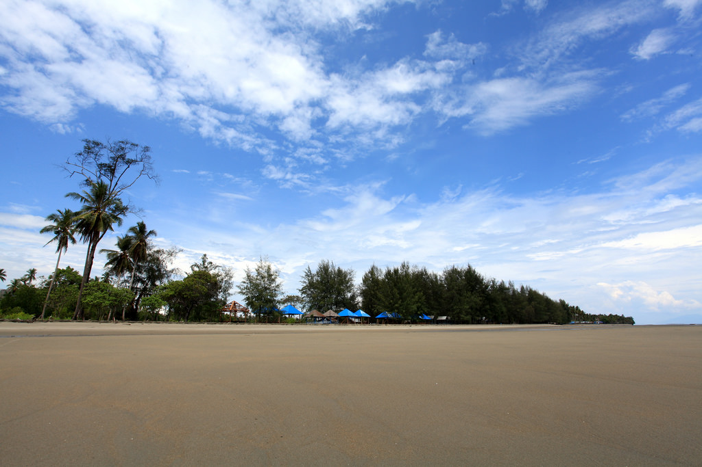
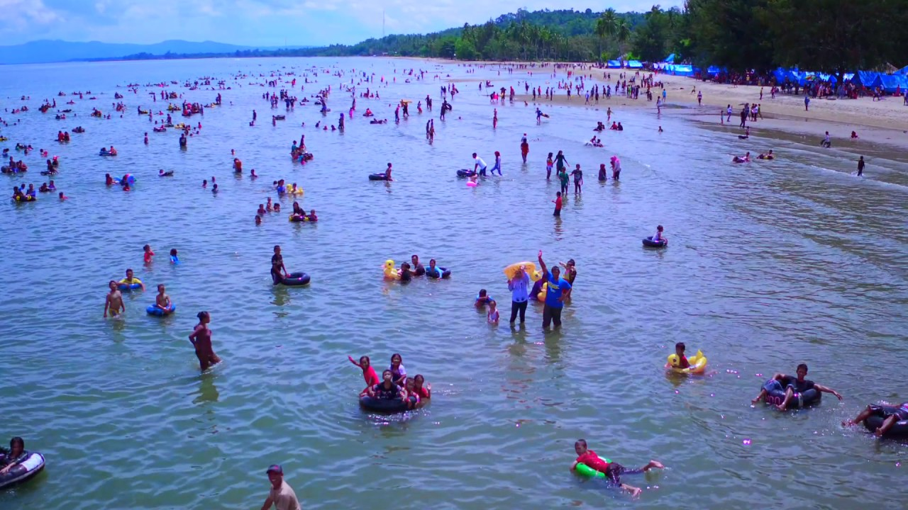

Objek Wisata
Objek wisata adalah segala sesuatu yang ada di daerah tujuan wisata yang merupakan daya tarik agar orang-orang mau datang berkunjung ke tempat tersebut.
1. Wisata Labengki
Pulau labengki merupakan pulau cantik dengan gugusan pulau-pulau kecil serta teluk cantik yang di juluki teluk cinta karena bentuknya menyerupai hati jika dilihati dari atas menggunakan drone.
Pulau Labengki terletak di desa Labengki, kecamatan Lasolo, Kabupaten Konawe Utara, Sulawesi Tenggara. Untuk menuju ke pulau ini dibutuhkan perjalanan laut selama 5 jam dari Kendari. Namun jika beruntung, sepanjang perjalanan traveler akan dihibur dengan kawasan lumba-lumba yang sesekali melompat di udara.
2. Pantai Panggulawu
Pantai panggulawu pilihan terbaik masyarakat kendari dan sekitarnya,selain Pantai ini memliki pesisir pantai yang panjang, juga pemandangan pohon punya yg menjadi viu ut ber foto.
Pesona pantai Panggulawu begitu memikat hati dengan desiran ombaknya yang menggulung menantang, sehingga lebih asyik bermain ombak.
Objek wisata pantai Panggulawu terletak di Desa Pudonggala, Kecamatan Sawa, Kabupaten Konawe Utara, Sulawesi Tenggara. Orang setempat biasa menyebutnya pantai Pudonggala karena tempatnya di wilayah Pudonggala.  
3.Air Terjun Ameseu
Keindahan yang terdapat dalam objek wisata Air Terjun Ameseu ini, adalah pemandangan bukitnya yang begitu indah, kesejukan air terjunnya dan tebingnya yang tersusun rapi. Selain itu, di tempat air terjun ini juga bertingkat-tingkat.
Air Terjun Ameseu ini terletak di Desa Tetewatu, Kecamatan Wiwirano, Konawe Utara, Sulawesi Tenggara. Sumber mata air terjun ini berasal dari kaki gunung yang membentuk sebuah goa yang mengalir di bebatuan curam. Dengan di kelilingi tebing tinggi dan pepohonan yang rimbun membuat air terjun ini terasa sangat dingin dan segar.

4. Air Panas Wawolesea
Mungkin objek wisata air panas Wawolesea belum banyak yang tahu. Namun tempat wisata yang satu ini perlu anda kunjungi. Pasalnya, tempat ini bagaikan lukisan alam dengan hiasan pohon pinus di sekitarnya. Bentuknya bertingkat-tingkat menyerupai terasering persawahan namun airnya berwarna biru muda. Bahkan dalam tiap tingkatannya, level air panasnya pun juga berbeda-beda, mulai dari hangat hingga relatif panas.
Wisata alam ini terletak di Desa Wawolesea, Kecamatan Wawolesea (Kecamatan Lasolo, sebelum dimekarkan), Kabupaten Konawe Utara, Sulawesi Tenggara. Wisata permandian air panas Wawolesea begitu mudah dijangkau dengan menggunakan roda dua maupun roda empat. Dari Kota Kendari, Ibukota Provinsi Sulawesi Tenggara, jarak tempuh sekitar 80 km, dan 20 km dari Wanggudu, ibukota Kabupaten Konawe Utara. Dari jalan poros ke permandian air panas ini sekitar 200 meter.

5. Pantai Tanjung Taipa
Objek wisata Konawe Utara ini, banyak yang menyebutnya adalah wisata primadona. Pantai Tanjung Taipa terletak di Kecamatan Lembo, Kabupaten Konawe Utara, Sulawesi Tenggara.
Ketika memasuki lokasi Pantai Taipa, pengunjung akan disambut jejeran gazebo dan penjaja makanan dan minuman yang berada di belakang gazebo. Pantai Taipa juga memiliki pemandangan yang indah dan memikat hati bagi siapa saja yang mengunjunginya, dan pengunjung bisa berenang atau sekedar bermain air. Tak hanya itu, pantai ini memiliki daya tarik tersendiri dengan panjang pasir putih dan gelombang laut silih berganti menjadi pemandangan yang sangat menakjubkan ketika sedang berada di kawasan pantai sepanjang kurang lebih tiga kilometer itu.